| The distant views of Mt. Fuji 富士山遠望 | |
| Yukari Shimazaki | |
| Yukari Shimazaki (2013) | |
はじめに
静岡県と山梨県の境に位置する富士山は、どちらから見た姿が美しいか？と両県の論争は尽きませんが、お隣、神奈川県から斜に見ているのもよいものです。
富士山のイメージと言えば、頂上が平らで円錐形。神奈川県南東部からの富士山は、丹沢山系に遮られることなく、その姿を遠く眺めることができます。それより北部、例えば東京から眺める富士山は、山頂主体で手前には別の山々が入るため、イメージとは違ってその美しい稜線を隠されてしまいます。また、山麓からの富士山の写真集は素晴らしいものが多数出版されていますが、それらに比べて圧倒的に遠方からの撮影になります。もちろん富士山も小さくなってしまいますが、そこで300mmや400mmといった超望遠レンズを使いますと、富士山と共に沈みゆく夕陽も大きく写ります。あるいは、条件さえ整えば、壮大な夕焼け空の奥に富士山のある絵ができます。そういう写真に適した地こそ、神奈川県南東部になるのです。
横浜市南区から三浦市にかけて、夕陽と富士山が同方向に見えるのは、だいたい3月上旬～4月中旬、8月下旬～10月初旬の期間になります。太陽の沈む位置が日々ずれて行きますので、富士山と太陽の位置を考えながら、春は横浜から三浦半島へ、秋は逆方向に移動しながら撮影します。ただし、距離がありますので、見えない日が圧倒的に多いです。快晴でも「富士山だけは低い雲の中」なんてよくあることです。そうした中、撮影のチャンスをうかがいながら10年間を過ごして来ましたが、電子写真集出版のお話を頂き、2013年6月、富士山が世界文化遺産に選ばれたタイミングから、富士山でやってみようと思いました。
君島靖彦
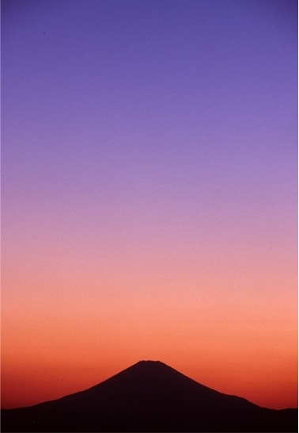
Chapter 1
Sea & Mt.Fuji
海と富士山
冠雪の富士と赤い鳥居
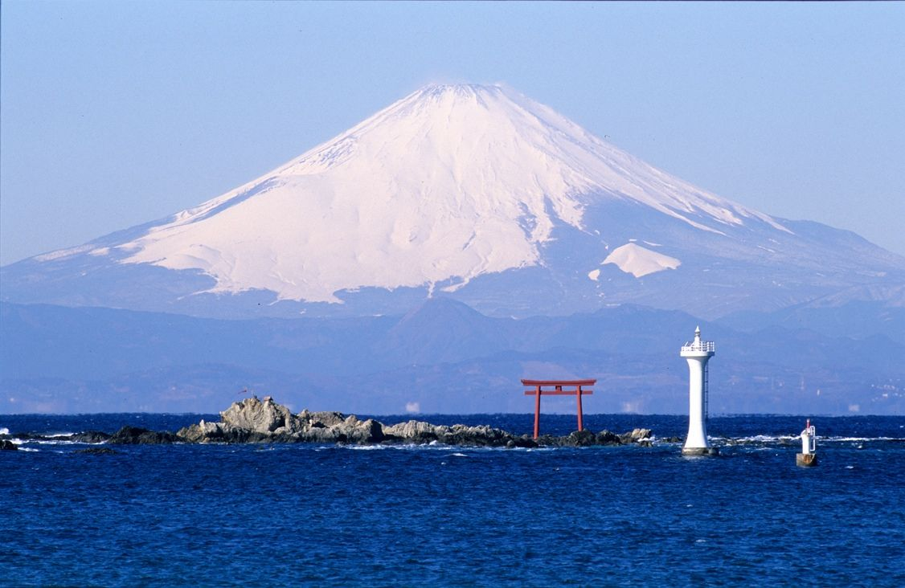
龍神が祀られている名島 （菜島） の 鳥居と葉山灯台。この灯台は石原裕次郎氏を偲んで社団法人日本外洋帆走協会 （当時石原慎太郎会長） が募金を集めて設置し、葉山町が管理しています。裕次郎灯台とも呼ばれます。
撮影地：葉山町堀内（真名瀬海岸）
撮影日時：2003.1.24
染まる海と富士山
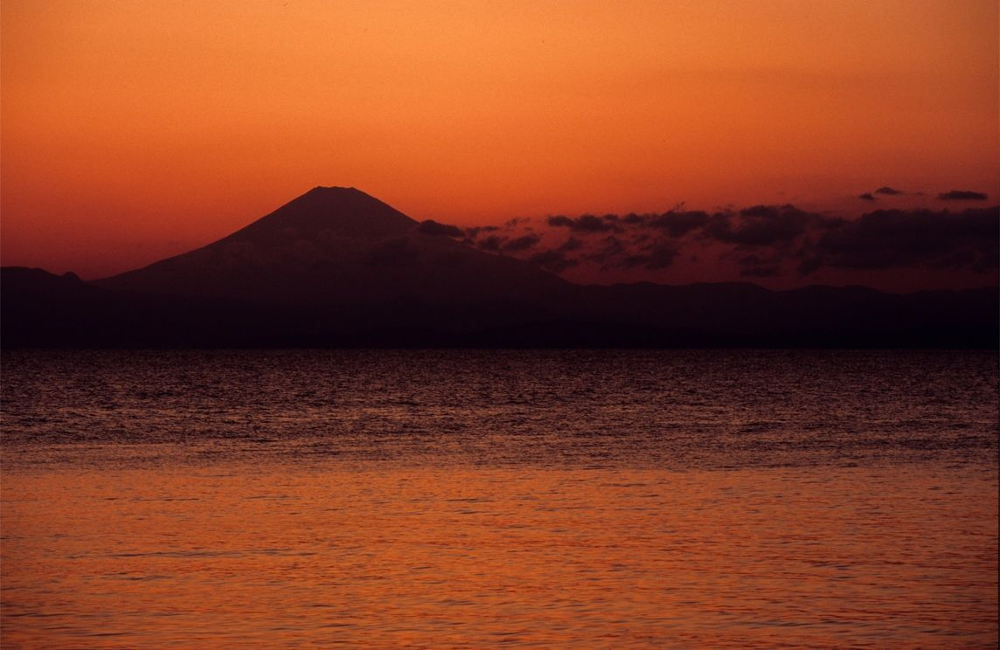
日中は山頂あたりが雲で隠れていましたが、天候自体は快晴で、夕方にはご覧の通りの手前の低い雲だけとなり、日没後の海がオレンジに染まりました。波があるとこのようにはなりませんから、このような光景はあまり見られませんが、ここは防潮堤があるため、比較的起こりやすいかも知れません。
撮影地：横須賀市秋谷（秋谷漁港入口付近）
撮影日時：2013.4.13
Chapter 2
Yokohama & Mt.Fuji
横浜と富士山
みなとみらいと赤富士
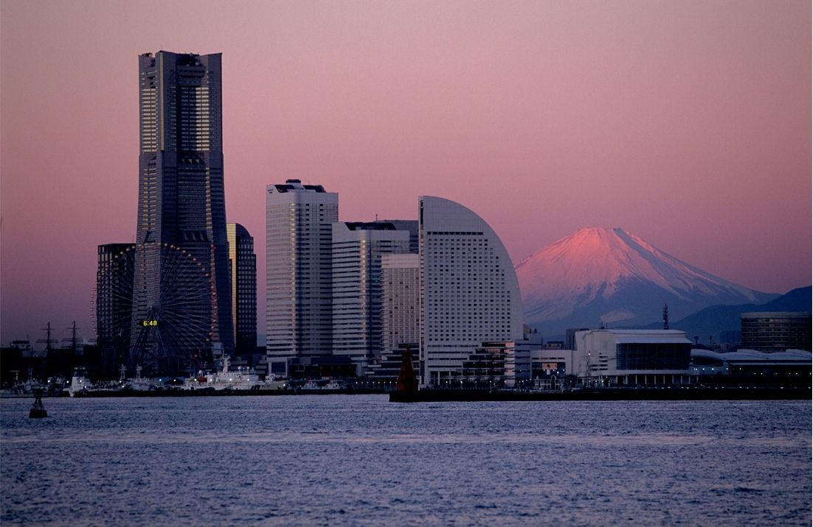
積雪の白い富士山が昇ったばかりの朝日に照らされて赤く染まるのを 、 「赤富士」 と呼びます （富士山を西から見た場合は夕陽の時になります） 。朝日を浴びてもほとんど赤くならない日もありますが、この日は染まりました。
撮影地：横浜市鶴見区
撮影日時：2001.12.23
みなとみらい夕景と富士山
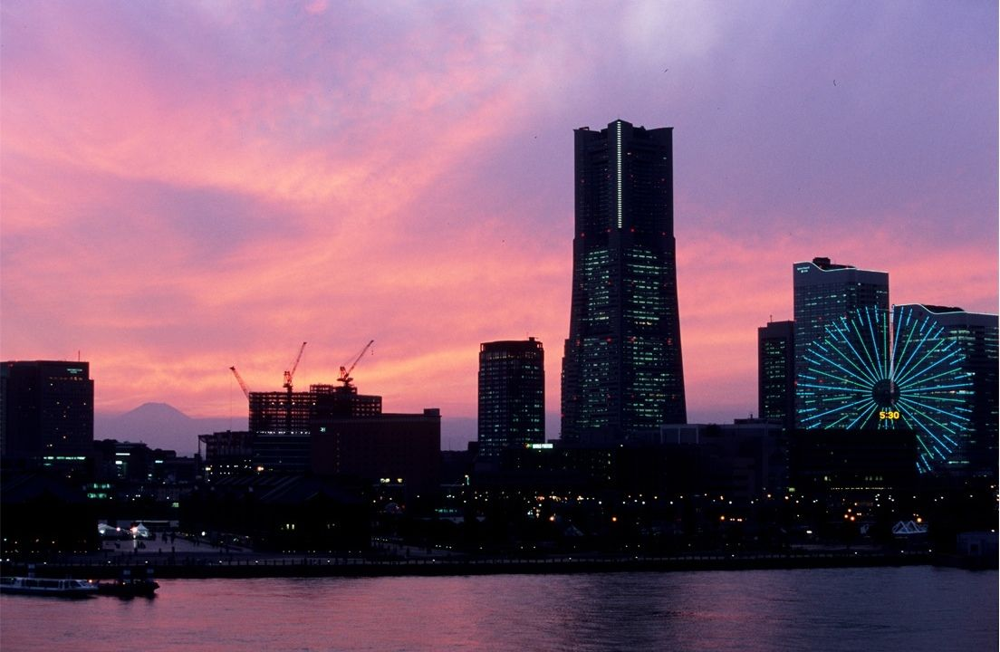
ミナトヨコハマの中心的存在である、横浜港大桟橋国際客船ターミナルから富士山の山頂が望めました。日本を代表する港として、外国のお客様を富士山の見える場所でお迎えできることを誇りに思います。
撮影地：横浜市西区みなとみらい
撮影日時：2008.10.3
Chapter 4
Mt.fuji & People
富士山と人々
燃える雲と富士山
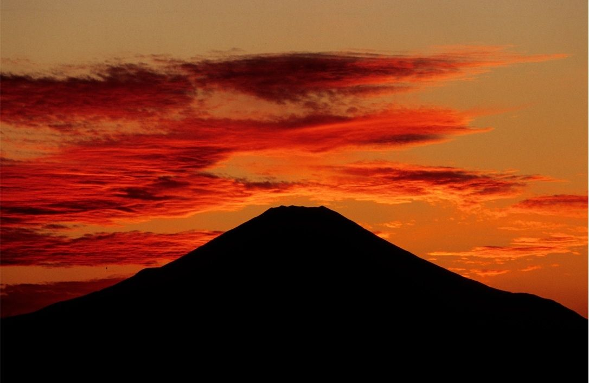
撮影位置がこれより北になると、富士山の裾野が丹沢山地に隠されてしまいます。そのため、富士山日没を追いかける夏／秋シーズン最後の日の夕焼け。
撮影地：横浜市南区
撮影日時：2006.10.8
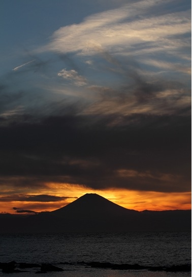 The two worlds
ふたつの世界
撮影位置がこれより北になると、富士山の裾野が丹沢山地に隠されてしまいます。そのため、富士山日没を追いかける夏／秋シーズン最後の日の夕焼け。
撮影地：横浜市南区
撮影日時：2006.10.8
山頂の太陽
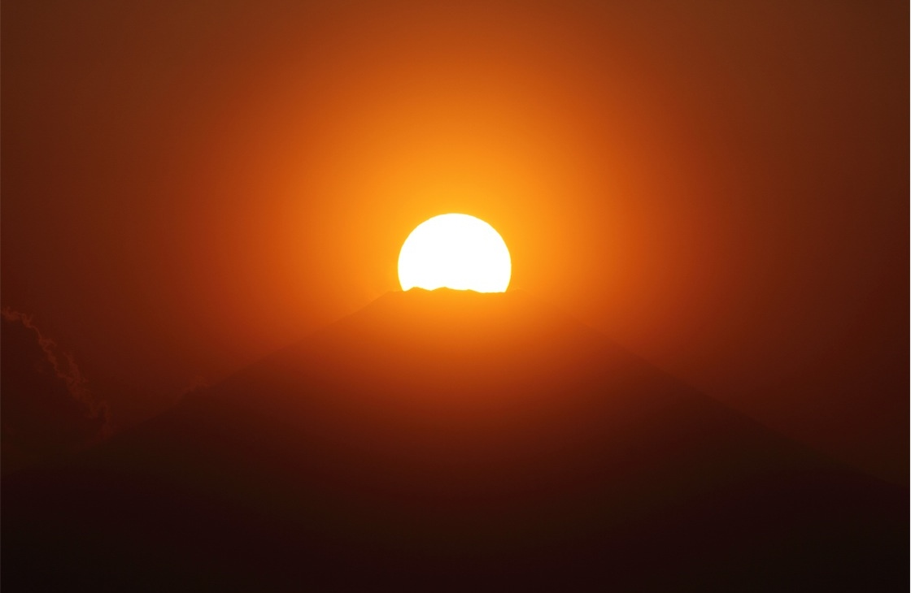
午後になっても見えなそうな気配でしたが、夕方になってかすんではいるものの富士山の姿が見えるようになりました。雲も夕方の方が少なかった感じです。夕日は右肩で割れて沈みました。良い感じの雲がないので480mm相当のアップのみの撮影でした。
撮影地：横浜市南区
撮影日時：2012.3.15
西から回復する天候と富士山
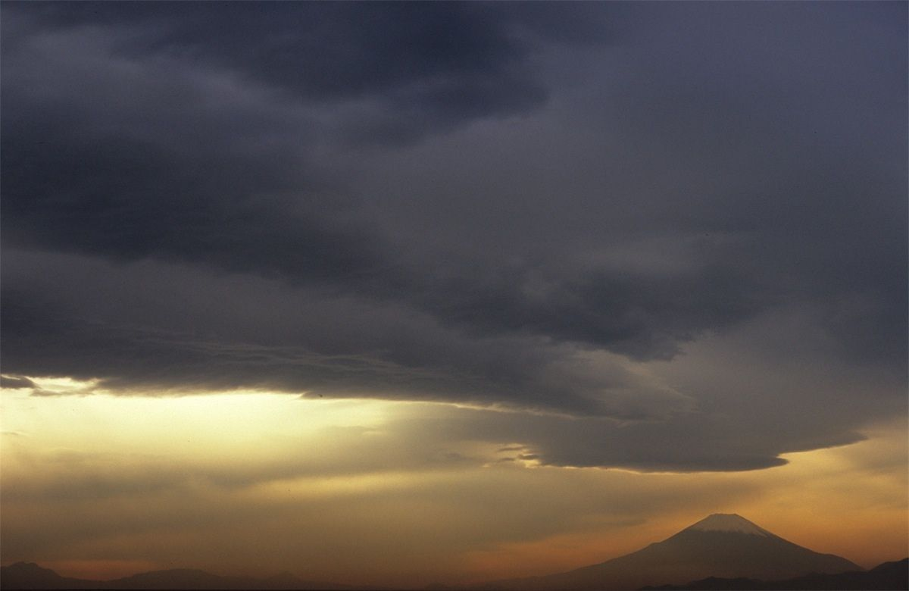
夕刻になって雲の向こうに富士が姿を現しました。
撮影地：横浜市南区
撮影日時：2009.11.5
一日の終わりに
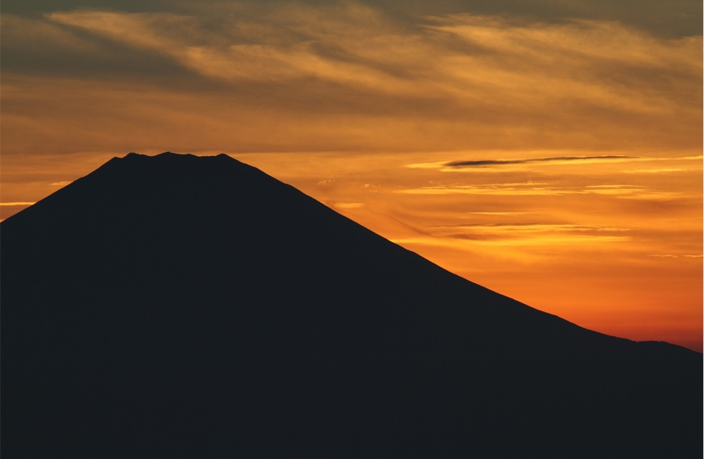
午前中はよく見え、夕方にはくっきり。若干焼けた雲はある程度の高さまでで、あとは雲のない空でした。山頂日没後、太陽は富士山の陰になり、だんだんと右側が明るくなります。
撮影地：藤沢市片瀬山
撮影日時：2012.9.10
雲たちの共演
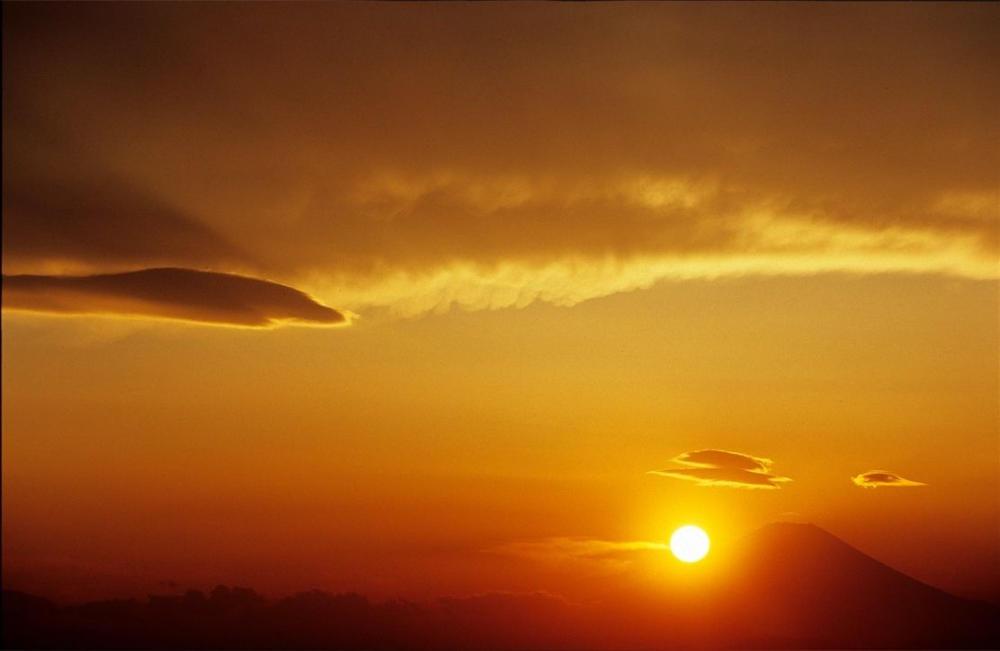
それぞれ自己主張する雲。この後、富士山の上にあるレンズ雲は刻々と形を変え、丸っこくなっていきました。
撮影地：横浜市南区
撮影日時：2008.3.9
黄昏のグラデーション
空気の澄んだ2月までには結構あるのですが、春になるとやっぱり難しい。富士山の日没シーズンの季節に美しい日没後の空が撮れるのは稀なことです。真っ赤な空から更に時間が経過して、青さが目立って見事なグラデーションになりました。
撮影地：藤沢市片瀬山
撮影日時：2009.4.2
Chapter 4
The setting sun and Mt. Fuji
夕日と富士山
なぎさの少女たち
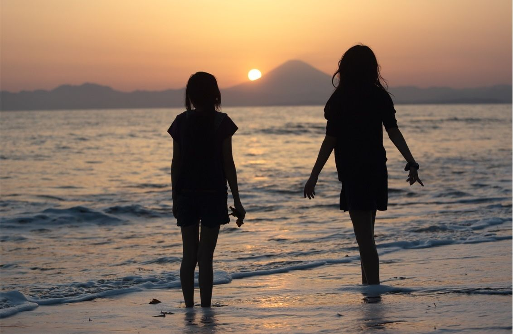
時々、少し高い波がやって来ました。ふたりで眺めた夕陽をいつまでも覚えていてくれるでしょうか。
撮影地：横須賀市秋谷
撮影日時：2013.4.8
釣り人と富士山
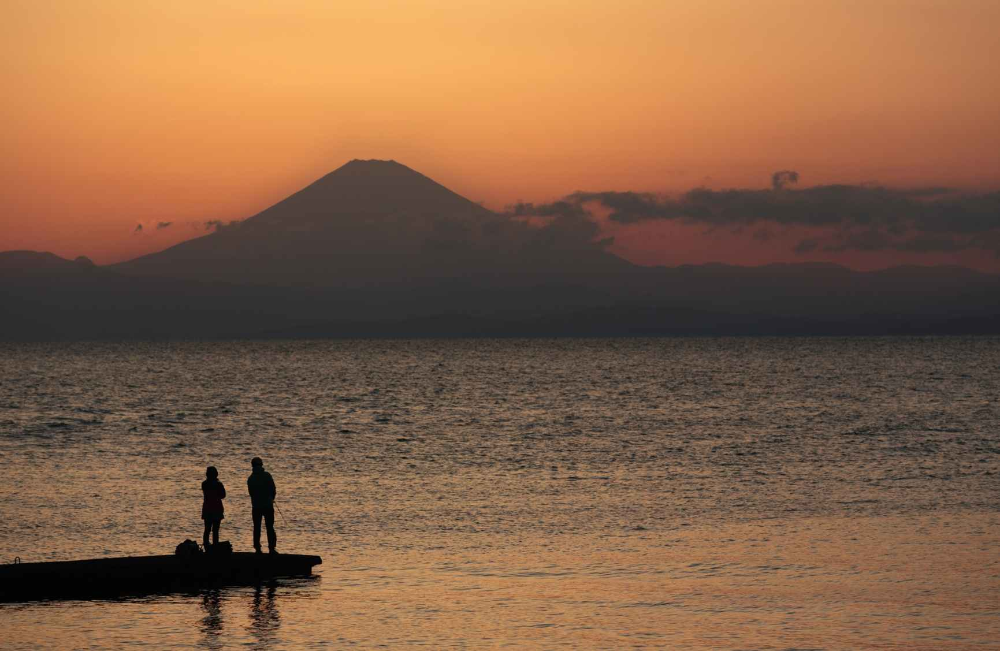
こんなに素敵な釣り場があるでしょうか。夕闇迫る頃、富士山を眺めながら。
撮影地：横須賀市秋谷
撮影日時：2013.4.13
浜降祭と富士山
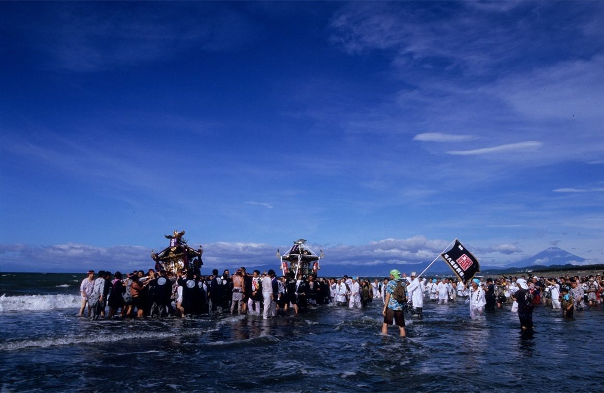
お神輿が海に入る「禊（みそぎ）」。梅雨明け間近の「海の日」に行われるお祭りの一番の見どころです。夏は富士山の見えにくい季節。青空と共に現れる富士山は3年に1度くらいかも知れません。撮影ポイントとしては堤防の上が人気ですが、私は一緒に海に入って撮っています。この時は、異人さんの観光客が大はしゃぎで撮影していました。
撮影地：茅ヶ崎市南湖
撮影日時：2012.7.1
Chapter 5
Mt.fuji & Moon
富士山と月
富士山頂に浮かぶ月
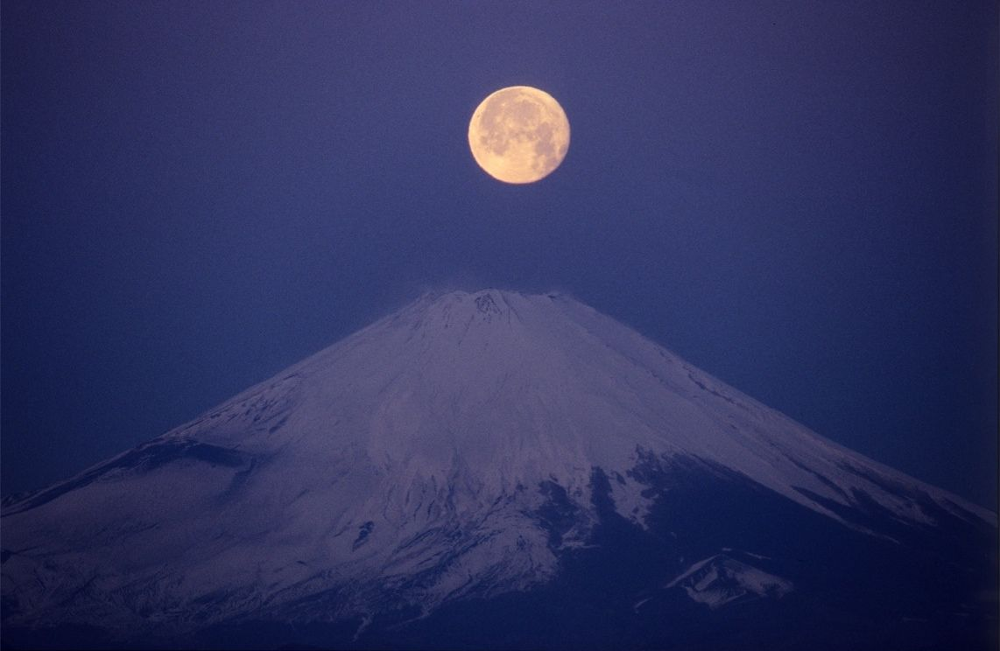
満月が山頂に沈みゆく現象を「パール富士」と呼ぶことがありますが、この時は2kmほど北で撮ったものです。月との組み合わせは太陽よりはるかにチャンスが少ないので、なかなか難しく思います。
撮影地：横須賀市秋谷
撮影日時：2013.4.8
早朝の相模湾と富士山
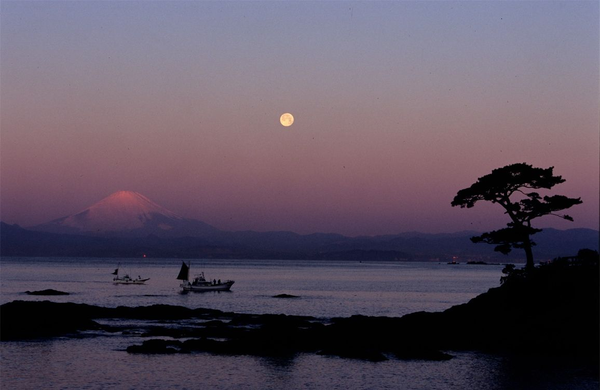
前景の松の木と漁船が赤富士と満月を引き立ててくれました。真冬の一日が、穏やかに明けてゆきます。
撮影地：横須賀市秋谷
撮影日時：2007.2.3
月夜の富士山
夜明け前、相模湾に面する湘南の街の向こう、明るい満月に富士山が照らし出されました。
撮影地：藤沢市片瀬山
撮影日時：2013.2.26